The first pokemon games were released in 1996, and pokemon games have been released ever since. The pokemon games provide a foundation for the pokemon anime. All the main stream pokemon games fall into one of 7 different generations. The main purpose of labelling them as different generations is to tell you how many different pokemon species existed when that game was created. Pokemon is one of the most played video games of all time and started with Generation 1 in 1996.
Over the course of the years, the pokemon games were divided into different generations based on when the games were released and which pokemon were released at the time. Up to the present there are 7 total generations Generation 1 Generation 2 Generation 3 Generation 4 Generation 5 Generation 6 Generation 7 which all of the main series pokemon games fit into, and altogether there are 32 main series game, 13 of which are paired with another 13, and six of which are standalone main series games.
The first pokemon games were the Red and Green series which were made for the Game Boy console in 1996. These were the first games and the pokemon in these games were called the first generation or Generation 1. Generation 1 introduced 151 different pokemon which the player could interact with, capture or defeat. In 1998 another Generation 1 series was introduced, Pokemon Red and Blue. Soon after a third Generation 1 game was introduced which was a special edition version of Pokemon Red and Blue called Pokemon Yellow. All of these games watched the main character, the player adventure through the Kanto region and capture and train pokemon with the ultimate goal of defeating the 8 Gym Leaders, and challenge the Pokemon League in an attempt to become the strongest trainer there is. The 8 Gym leaders each commanded a different type of Pokemon and gave you a Gym Badge after defeating them. After the player collected 8 Gym badges they attempted to take on the Pokemon League. The Pokemon League consists of the Elite Four who command a different type of pokemon each, and the Champion who had many different types of pokemon. In order to become the Champion the player must defeat all five of these formidable trainers in a row with nothing but their items and pokemon to help them. Along the way the player stops the evil Team Rocket from carrying out their horrible plans and make many friends in doing so.
 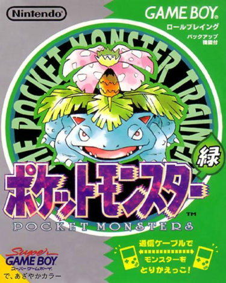
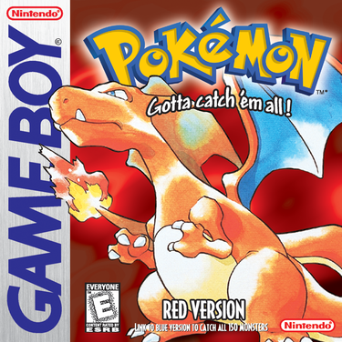
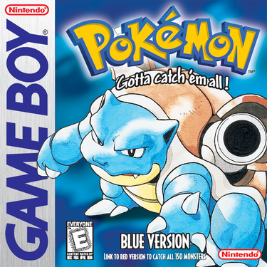
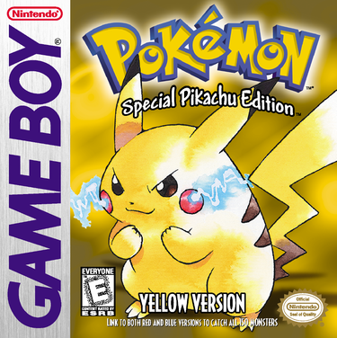
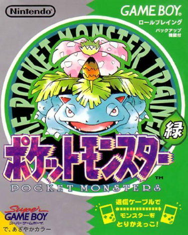
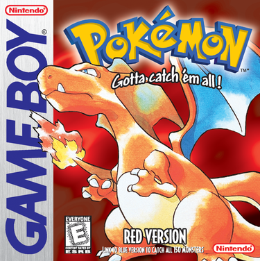
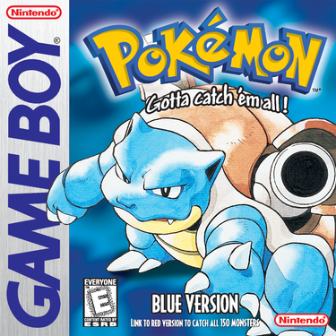
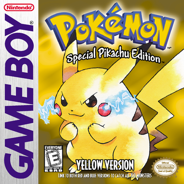
In 1999 the Generation 2 games were released, Pokemon Gold and Silver. These games added a new 100 species of pokemon to the pre-existing 151, totalling in 251 species of pokemon. This game added two new types of pokemon to the game, Dark and Steel bringing the total number of pokemon types to 17. This pokemon game was set in the Johto region where the trainer would fight different 8 Gym Leaders and fight the Pokemon. After their defeat in the Kanto region, the evil Team Rocket came to the Johto region to carry out their evil plans. In this game the player once again must thwart the evil Team Rocket’s plans and fight the Pokemon League where they see a familiar face from the Kanto Pokemon League. Like the previous generation another pokemon game called Pokemon Crystal was introduced, an enhanced version of Gold and Silver.
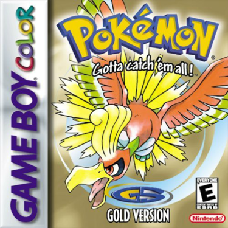 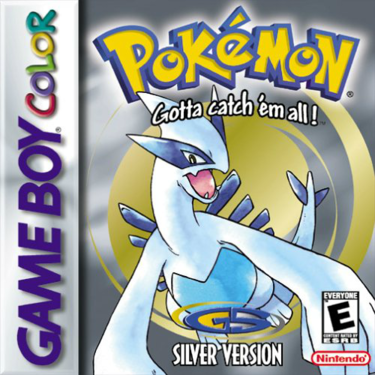 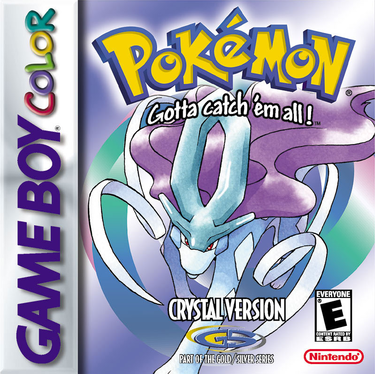In 2002 Generation 3 was introduced with the games Pokemon Ruby and Sapphire for the Game Boy Advanced. In Generation 3 135 new pokemon were introduced for a total of 386 pokemon, although only 202 of them were available in the games. A third enhanced version of Ruby and Sapphire were released, called Pokemon Emerald. These games took place in the Hoenn region where the player fought against the evil teams Aqua and Magma and fought against an entirely new set of 8 Gym Leaders and Pokemon League. Also in Generation 3 remakes of the original pokemon games called Pokemon FireRed and LeafGreen were introduced.
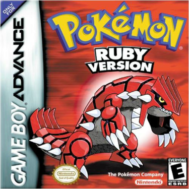 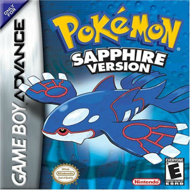 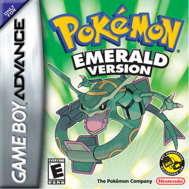 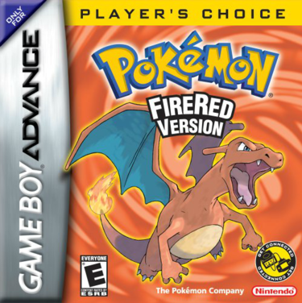 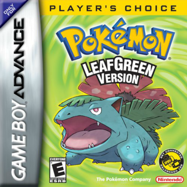In Generation Four two new games called Pokemon Diamond and Pearl were introduced in 2006 with a third enhanced version called Pokemon Platinum was introduced in 2008. These games took place in the Sinnoh region which was ridden with the evil Team Galactic. The player must defeat Team Galactic, The Gym Leaders and the Pokemon League to beat the game. These games added 107 new pokemon, with a total of 493 pokemon. Just like FireRed and LeafGreen remakes of Gold and Silver were introduced in 2009 called HeartGold and SoulSilver, which was the first game to allow players to adventure through two different regions, being Kanto and Johto. The Generation 4 games were the first pokemon games to be made for the Nintendo DS console family.
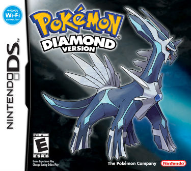 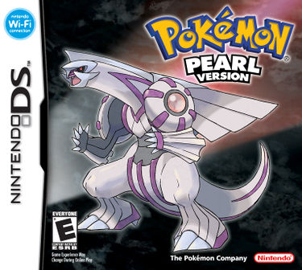 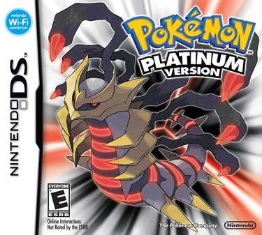 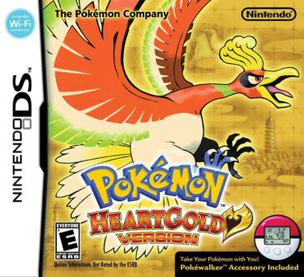 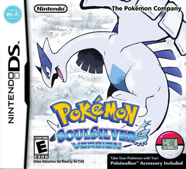In 2010 the Generation 5 games were released, Pokemon Black and White. These games took place in the Unova region which added 156 new species of pokemon bringing the total number up to 649. For the first time in Pokemon history they created sequels for a pokemon game, with Pokemon Black and White 2 which were released, in 2012. These games continued the storyline from the first two games respectively. Although some aspects like most of the gym leaders and pokemon league remained the same, the plot of the game changed drastically, and continued where the player left off in the original game, defeating Team Plasma.
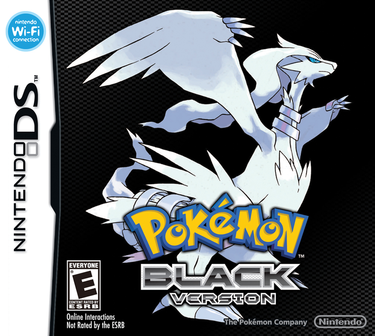 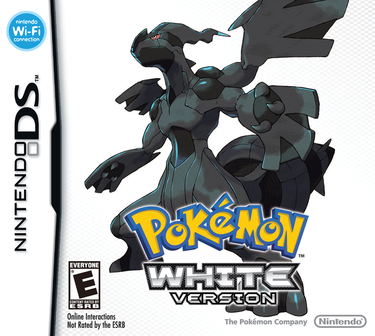 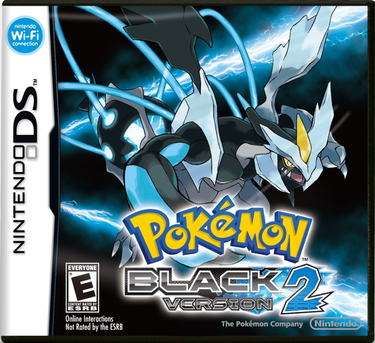 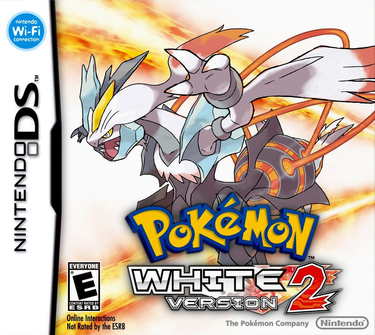In 2013 the Generation 6 games, Pokemon X and Y set in the Kalos region were released. These games added only 72 new pokemon bringing the total to 721 pokemon, but also added a key new feature to the game, mega evolution. Mega evolution can only occur when a pokemon is holding its respective Mega stone. Only a select few pokemon have the ability to mega evolve, and mega evolution changes many things about the pokemon. It changes the stats(generally making it better), ability and appearance. Mega evolution is an in-battle effect and the pokemon returns to its original form after the battle is over. Only one pokemon on each team can mega evolve in one battle, although multiple pokemon can be holding their respective mega stones. This generation also added a new type, fairy which is the 18th type to be added, and also gave eevee a new fairy type evolution. In this game the player must battle and defeat Team Plasma and defeat the Gym Leaders and the Pokemon League. In 2014 another set of Generation 6 games were released, the Ruby and Sapphire remakes called Omega Ruby and Alpha Sapphire.
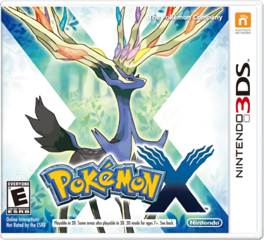 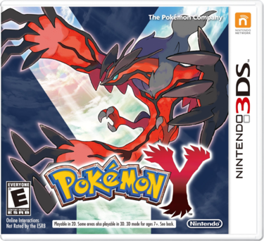 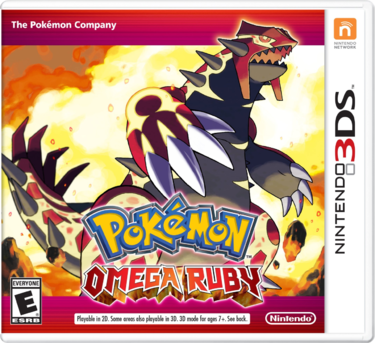 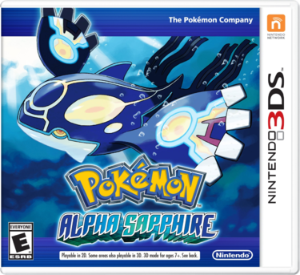Finally the most recent generation being Generation 7 has two games, Pokemon Sun and Moon. Pokemon Sun and Moon added 81 new pokemon to the mix bringing us to the current total of 802 pokemon. In the Alola region new forms of old pokemon were added. The Alola region is based on Hawaii in the real world, and so certain species of pokemon had to adapt, improvise and overcome to survive in the Alola region, hence the Alola Forms. These Alolan variants have different appearances, types, movepool, ability, stats and size. Instead of the usual 8 Gym Leaders and Pokemon league, Pokemon Sun and Moon had a different system of progress, where there were several trial captains who would challenge you to complete their trial and then battle you. Once the trials on all four islands were completed, the player was able to battle the Pokemon League which consists of four of the various trial captains as the Elite Four and Professor Kukui as the Champion. Once the player becomes the champion they can attempt the battle tree, and accept challenges from various powerful trainers they fought against along their initial journey who strive to become the champion as well.
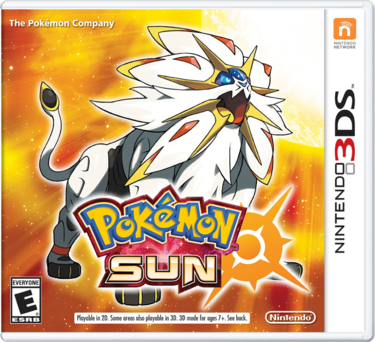 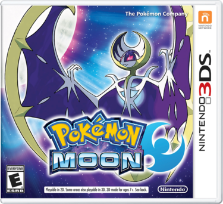The multiplayer aspect of pokemon is one of the biggest parts of the Pokemon franchise. Every time a new game is released pokemon fans all over the world start training up many different multiplayer teams to play against other players around the world and climb the ranks. There are a number of different game modes and tiers in multiplayer. The most common game modes are, singles, doubles and monotype. In singles the battles are played pitting one pokemon against another with a full team of six pokemon. In doubles the pokemon fight in pairs, generally with abilities or moves that benefit their partner with teams of four pokemon. In monotype there is a full team of six pokemon, the only rule being they are in the OU tier or below, follow the regular singles rules, and that all six of the pokemon must have at least one type in common. There are also different tiers which are changed every time new features, aspects or pokemon are added to the game. The tiers are Ubers,OU, UU, RU, NU and LC. Ubers includes almost all the pokemon ever released. OU stands for Over Used and includes many powerful pokemon excluding the pokemon solely in Ubers. UU stands for Under Used and includes pokemon generally less powerful than the OU pokemon. RU stands for Rarely Used and includes pokemon that are less powerful and popular. NU being the lowest tier generally refers to the least used pokemon which are generally not nearly as powerful as the other tiers and stands for Never Used. LC is more of a standalone tier where usually only pokemon that are in their basic stage and have at least one other evolution are allowed. There are three main factors that will affect your pokemon other than strategy, Iv’s, natures and Ev’s.
In order to get the perfect Iv’s and natures you need to breed pokemon. Iv’s or Individual Values can go from 0-31 in each stat. At Level 100 a pokemon with 31 Iv’s in a stat will have 31 higher of that exact same pokemon with 0 Iv’s in that same stat. Natures increase a stat by 10% and decrease a stat by 10%. Generally you would want a nature increasing whatever stat is most important, and decreasing the offensive stat that you won’t have any of your final moves in. For example Weavile is a fast physically attacking pokemon, so I would have a jolly nature so it would outspeed other Weavile’s. Jolly increases the speed stat and decreases the special attack stat. In order to breed two pokemon you need either two pokemon from the same breeding group, or a pokemon and a ditto. Ditto is a pokemon that is able to transform into any other pokemon in the game giving it the ability to breed with other pokemon. The ultimate goal when breeding is to get the pokemon you want with perfect Iv’s, the ability you want, the nature you want and the egg moves you want. In order to get egg moves you must breed a pokemon that has learned the move in the same breeding group as the desired pokemon, with your pokemon. Sometimes your pokemon will be the species of the other pokemon so you must breed until you get your desired pokemon with the egg move. Once you have your pokemon with the desired egg moves (if at all any) you would go into the process of chaining dittos in order to get the desired nature and perfect Iv’s. In order to increase the chance of encountering a pokemon with your desired nature you would use the Synchronize method. Certain pokemon have the ability Synchronize, if the pokemon with Synchronize has your desired nature and it is kept in the front of your party the chance of encountering a pokemon with your desired nature goes from 4% to 50%. If you use the Synchronize method and then chain 31 ditto’s, the next ditto to appear in the chain will have at least 4 perfect Iv’s(Here's a guide to help you out). If you hope that you get the Iv’s that your pokemon needs and the 50% chance for the nature. Once you have a pokemon with the proper egg moves, and a good enough ditto you can start the real breeding. The first thing you would do is put an everstone on your ditto and breed with the desired pokemon. This will create a pokemon with the egg moves, the right nature, and random Iv’s. Then you will hatch the egg. And breed this new pokemon with the ditto. This time you put the everstone on the desired pokemon because it has the right nature, and put a destiny knot on the Ditto to get the new Iv’s. Be sure to only breed with males of the desired pokemon because females have an 80% chance of passing on an ability. Once you get a female with the desired ability start using that to breed with ditto. Once you have a male and female of the desired pokemon with all the Iv’s that they need from a ditto, then breed with the two pokemon, with the everstone on one and the destiny knot on the other. If the ditto had four or five perfect Iv’s then continue to breed until you have a good enough Iv pokemon, if it had 6 Iv’s then you’re ready to move onto the next stage of training your pokemon, Ev training.
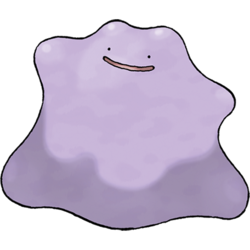 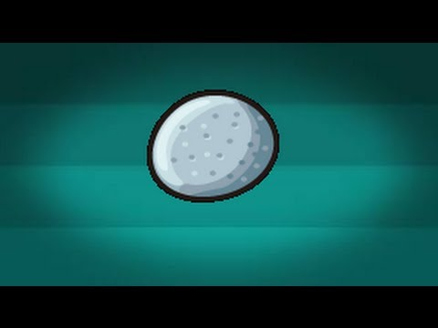 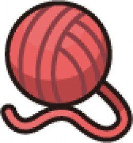Ev’s or Effort Values were created to ensure that wild pokemon would always be weaker than a captured pokemon of the same level nature and Iv’s. Ev’s are obtained from defeating a pokemon, and every pokemon gives off different Ev’s. Pokemon can give a maximum of 3 Ev’s total per defeat, and can give them in either one or two stats. 4 Evs are equivalent to 1 status point, giving an Ev trained pokemon a significant advantage over a non Ev trained pokemon. A pokemon can obtain a maximum of 252 Ev’s in a single stat and a total of 510 Ev’s altogether. Generally for fast offensive pokemon the Ev spread would be in 252 in speed, 252 in either special attack or attack and 6 in HP. For slower offensive pokemon the Ev spread would be 252 in either special attack or attack, 252 in HP and 6 in either special defense or defense. For a focused tank the Ev spread would be 252 in HP, 252 in either special defense or defense and 6 in any other stat. For a mixed tank the Ev spread would be 252 in HP, 128 in special defense, and 128 in defense( as the last 2 evs wouldn’t equal a single stat point they are unnecessary). In addition to the traditional ways of Ev training pokemon, you can use several Ev enhancing items to make the process easier. There is a power item for each stat, which gives a bonus amount of Ev's in addition to what is gained by defeating a pokemon, allowing someone to train a pokemon in two stats at the same time. HP-Power Weight, Attack-Power Bracer, Defense- Power Belt, Special Attack- Power Lens, Special Defense- Power Band, Speed- Power Anklet. Here is a guide containing all the information on what pokemon you need to defeat, what items you can use to simplify the process, and some special features in the new game you can use to help you EV train your pokemon. And with that the only thing you need to start battling online is strategy and general experience with pokemon battling,and so the more you battle the better you will be.